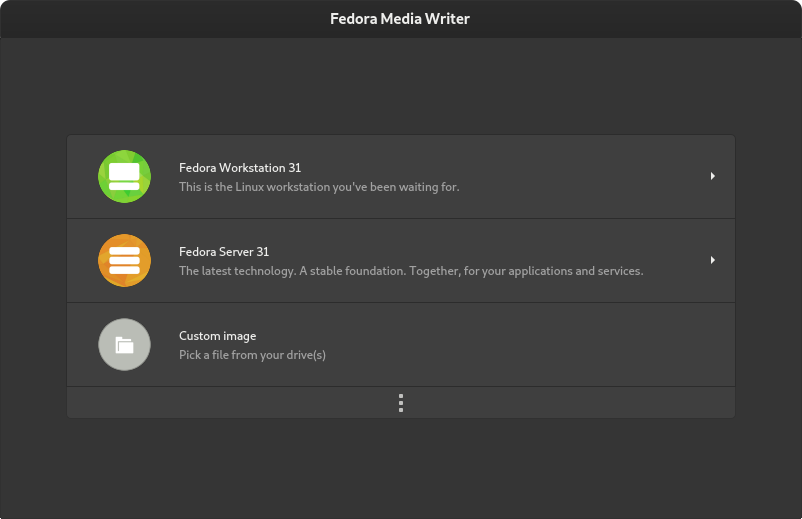
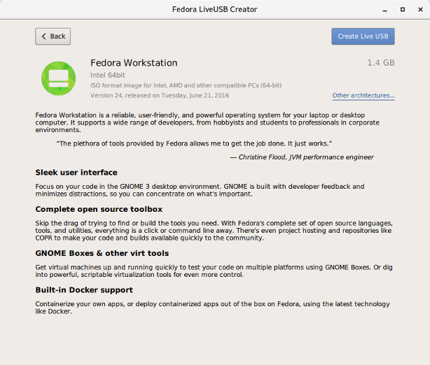
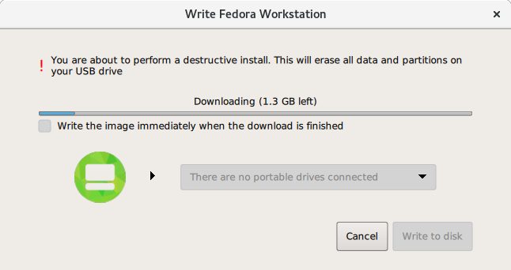
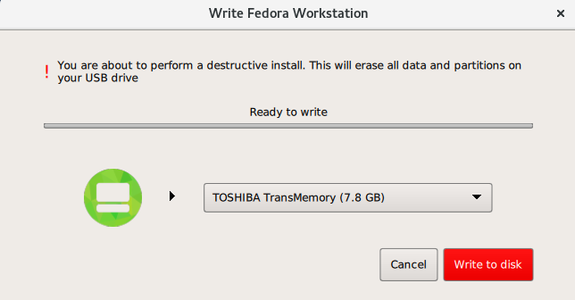

Preparing for Installation
This chapter describes the steps you need take before you begin the installation. Not every step must be strictly followed - for example, if you plan to use the default installation settings, you do not need to gather system information such as disk device labels/UUIDs or network information such as the system’s IP address. However, you should still go through this chapter, as it also describes the available types of installation media and how to prepare boot media and installation sources.
Upgrade or Install?
If you already have Fedora installed and want to upgrade your installation to the current version, there are two basic ways to do so:
- Automatic upgrade using dnf system upgrade
-
The preferred way to upgrade your system is an automatic upgrade using the dnf system upgrade utility. For information on performing an automatic upgrade, see Fedora Wiki dnf system upgrade.
- Manual Reinstallation
-
You can upgrade to the latest version of Fedora manually instead of relying on dnf system upgrade. This involves booting the installer as if you were performing a clean installation, letting it detect your existing Fedora system, and overwriting the root partition while preserving data on other partitions and volumes. The same process can also be used to reinstall the system, if you need to. For detailed information, see Manual System Upgrade or Reinstallation.
|
Always back up your data before performing an upgrade or reinstalling your system, no matter which method you choose. |
Preparing Boot Media
Fedora images are Hybrid ISOs and can be used to create installation media with both optical and USB disks, for booting on both BIOS and UEFI systems.
Fedora Media Writer
Fedora Media Writer has been significantly improved and is now the official, tested and supported way to make bootable media. Fedora Media Writer supports Linux, Mac, and Windows. It is an easy way to make bootable USB media to install Fedora (or other operating systems). Using Fedora Media Writer is strongly encouraged, although other USB media creation software can work as well.
Some of the new additions to Fedora Media Writer are that Fedora Workstation and Server are easily and quickly accessible from the selection on the main screen. Further choices are available if you select the button below Custom image. This offers a selection of various Fedora Spins, such as Xfce or Mate.
Historically, universal USB creation tools, such as Unetbootin, are a popular way to create USB installers from ISOs intended for optical media. They typically create a filesystem on the USB drive by extracting files from the image, and writing syslinux bootloader to the device.
These methods circumvent the boot-loader configuration built into Fedora images, which are pre-partitioned and designed to boot on UEFI systems with SecureBoot enabled as well as BIOS systems, and thus they do not produce consistent results with Fedora images, especially on UEFI systems.
The best results are produced by utilities that use a direct write method and do not modify the Fedora image.
|
Always think twice before writing an image to the device. The media creation methods described in this article are destructive. All data on the USB stick are deleted during the process, so make sure you have a back up of the data on the USB stick. Double check that you have selected correct device to write the image to! |
Installing and running Fedora Media Writer
On Fedora
On Fedora 25 or later, Fedora Media Writer is available in the default repository. You can use dnf to install the
package.
-
To install the Fedora Media Writer using:
$ sudo dnf install mediawriter -
Run the Fedora Media Writer:
$ mediawriteror in Gnome 3 select Activities and then click on Fedora Media Writer.
On other Linux distributions
The best way to install Fedora Media Writer on various Linux distributions is to use the pre-built Flatpak package. The package can be obtained from the official Flatpak repository Flathub.org.
-
To setup Flatpak on your Linux system, follow the guidelines on the Flatpak documentation page.
-
Run the application:
$ sudo mediawriter
On Windows
-
Download the latest Windows Installer file from GetFedora.org. The server automatically detects the running system and offers you the correct installation file for your Windows version.
-
Run the installation by double clicking the installer, and then continue through the set-up wizard. The Wizard lets you customize the software’s installation if you choose to.
-
Run the application by clicking on a launcher.
In Windows 8 and 10, the Fedora Media Writer launcher will be placed in the All apps menu under F. In Windows 10, you can just type Fedora Media Writer in the search box on the task bar.
On MacOS
-
Download the latest Macintosh Disk Image (the package will have a .dmg extension) from GetFedora.org. The server automatically detects the running system and offers a correct package for your MacOS.
-
Open the
.dmgfile, and press and hold the Ctrl key while clicking on the Fedora Media Writer application. -
Press "Open" in the pop-up menu.
-
Click the "Open" button in the confirmation dialog, if it appears.
Writing the ISO image to the USB Media.
-
Select the Fedora Edition you wish to make a bootable USB drive for.
Figure 1. Fedora Media Writer Main Screen: Choose your Edition of FedoraThe main selection lets you choose one of the default Fedora editions, Fedora Workstation or Server. Fedora Media Writer displays more details about the edition before you can proceed with downloading the image and the USB creation. You can choose a different architecture, if you select Other variants.
-
Select "Create Live USB" to proceed.
Figure 2. Fedora Media Writer Distro InformationFedora Media Writer will automatically download the ISO for you. If you have downloaded the ISO before and placed it in the Downloads directory, it will be immediately available to use.
Figure 3. Fedora Media Writer Automatic Download -
Plug in a USB drive on which you want to create the bootable media.
-
To write the image onto the media, click the red Write to disk button.
Figure 4. Fedora Media Writer Write to USB Device
Other methods to create a live USB
Using the Fedora Media Writer is highly recommended for everybody, because it offers a reliable way to create a live USB stick for Fedora installation.
However, some experienced users may prefer to go through the creation process manually. If you decide to do so, you have to download the installation images and use an application to write them onto the USB stick.
|
If you have downloaded and verified the installation images manually, you still can write them onto the USB stick using Fedora Media Writer. |
Downloading Boot and Installation Images
The Fedora Project offers different Editions tailored for some specific use cases. Choose the Fedora Edition best for you, or you can build your own by customizing after the installation, or by using a kickstart file as described in Creating a Kickstart File. Kickstart installation requires the netinstall media type, or a direct installation booting method such as PXE; kickstarts are not supported with live images.
Read more about Fedora Workstation, Fedora Cloud, Fedora Server and the available media types in Downloading Fedora.
You can also choose a Fedora Spin featuring favorite alternative desktops or tools for specialized tasks at https://spins.fedoraproject.org.
Verifying the Downloaded Image
Because transmission errors or other problems may corrupt the Fedora image you have downloaded, it is important to verify the file’s integrity. After the images are created, an operation is performed on the file that produces a value called a checksum using a complex mathematical algorithm. The operation is sufficiently complex that any change to the original file will produce a different checksum.
By calculating the image’s checksum on your own computer and comparing it to the original checksum, you can verify the image has not been tampered with or corrupted. The original checksum values are provided at https://getfedora.org/security/, and are gpg signed to demonstrate their integrity.
Verifying checksums on Windows systems
-
Download the Fedora image of your choice from https://fedoraproject.org/get-fedora and the corresponding checksum file from https://getfedora.org/security/
-
Open a powershell session.
-
Change to the directory containing the downloaded files.
> cd $HOME\Downloads\ > ls Directory: C:\Users\Pete\Downloads Mode LastWriteTime Length Name ---- ------------- ------ ---- -a--- 11/25/2014 12:39 PM 272 Fedora-Server-21-x86_64-CHECKSUM -a--- 11/25/2014 12:39 PM 2047868928 Fedora-Server-DVD-x86_64-21.iso
-
Load the resources required to calculate the checksum.
> $image = "Fedora-Server-DVD-x86_64-21.iso" > $checksum_file = "Fedora-Server-21-x86_64-CHECKSUM" > $sha256 = New-Object -TypeName System.Security.Cryptography.sha256CryptoServiceProvider > $expected_checksum = ((Get-Content $checksum_file | Select-String -Pattern $image) -split " ")[0].ToLower()
-
Calculate the downloaded image’s checksum. This will take a while!
> $download_checksum = [System.BitConverter]::ToString($sha256.ComputeHash([System.IO.File]::ReadAllBytes("$PWD\$image"))).ToLower() -replace '-', '' -
Compare the calculated checksum to the expected checksum.
> echo "Download Checksum: $download_checksum" > echo "Expected Checksum: $expected_checksum" > if ( $download_checksum -eq "$expected_checksum" ) { echo "Checksum test passed!" } else { echo "Checksum test failed." }
Verifying checksums on Linux and OSX systems
-
Download the Fedora image of your choice from https://fedoraproject.org/get-fedora and the corresponding checksum file from https://getfedora.org/security/
-
Open a terminal window, and navigate to the directory with the downloaded files.
$ cd ~/Downloads -
Use the appropriate utility to verify the image checksum.
-
For Linux:
$ sha256sum -c *CHECKSUM
-
For OSX:
$ grep '^SHA256' *-CHECKSUM | awk -F '[()=]' '{ print $4 " " $2 }' | shasum -a 256 -c
-
Writing the images to USB media
Creating USB media with GNOME Disks
-
On a system with GNOME, or with the gnome-disk-utility package installed, open
Disksusing the system menu. -
Click your USB device in the left column.
-
Click the menu icon in the upper right corner of the window, and choose the
Restore Disk Imageoption. -
Navigate to your image file and click
Start Restoring. After a few minutes, it will report the process is complete and your installation media will be ready to use.
Creating USB Media on the Linux command line
-
Open a terminal window and insert the usb drive.
-
Find the
device nodeassigned to the drive. In the example below, the drive is givensdd.$ dmesg|tail [288954.686557] usb 2-1.8: New USB device strings: Mfr=0, Product=1, SerialNumber=2 [288954.686559] usb 2-1.8: Product: USB Storage [288954.686562] usb 2-1.8: SerialNumber: 000000009225 [288954.712590] usb-storage 2-1.8:1.0: USB Mass Storage device detected [288954.712687] scsi host6: usb-storage 2-1.8:1.0 [288954.712809] usbcore: registered new interface driver usb-storage [288954.716682] usbcore: registered new interface driver uas [288955.717140] scsi 6:0:0:0: Direct-Access Generic STORAGE DEVICE 9228 PQ: 0 ANSI: 0 [288955.717745] sd 6:0:0:0: Attached scsi generic sg4 type 0 [288961.876382] sd 6:0:0:0: sdd Attached SCSI removable disk -
Use the dd utility to write the image.
# dd if=/path/to/Fedora-Live-Security-x86_64-21.iso of=/dev/sdd
Pay extreme attention to the source (
if=) and target (of=) device. Theddcommand destroys all data on the target device. If you made a mistake, you could lose important data.
Creating a Boot CD or DVD
In addition to creating a bootable USB flash drive, you can also use the provided ISO images to create bootable optical media (a CD or DVD). This approach may be necessary when installing Fedora on an older system which can not boot from USB.
|
The exact steps you need to take to burn a bootable CD or DVD from an ISO image will vary depending on what disc burning software you use. This procedure only offers a general overview. |
-
Insert a blank CD or DVD into your system’s CD or DVD burner.
-
Open your system’s burning software - for example, Brasero on Fedora systems with GNOME desktop environment, or Nero on Windows systems. In the software’s main menu, find an option which lets you burn an ISO image to a disc. For example, in Brasero, this option is
Burn imagein the main menu on the left side of the window. -
When prompted, select the ISO image of Fedora to be burned, and the CD or DVD burner with a blank disc inside (if you have more than one drive).
-
Confirm your selection, and wait for the disc to be burned.